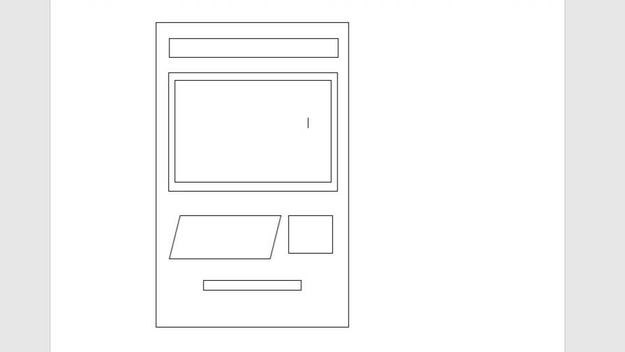
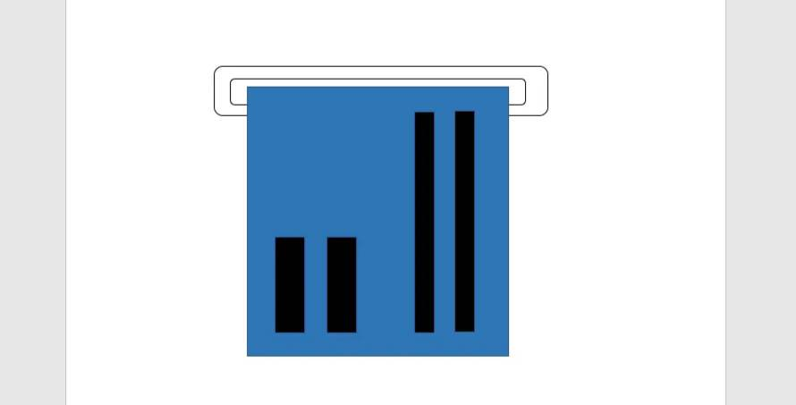
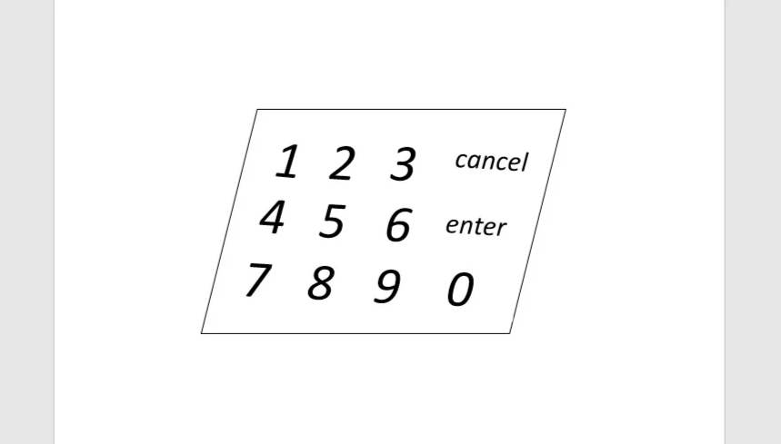
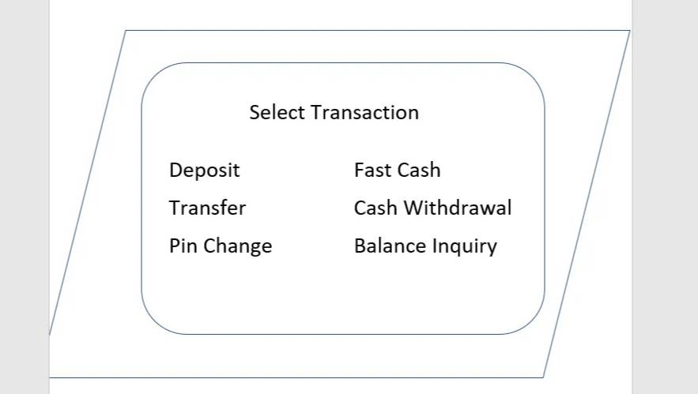
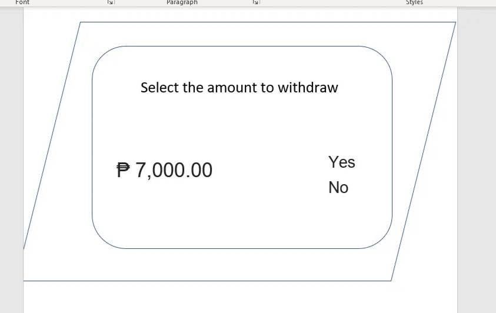
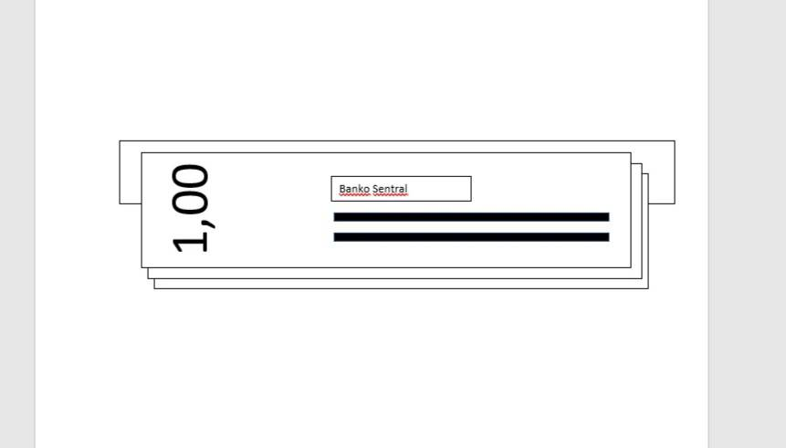
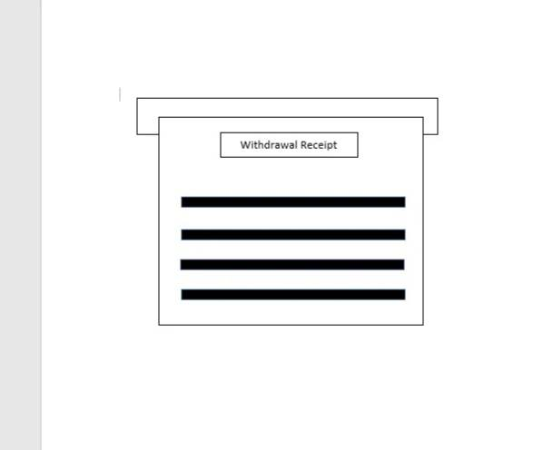

Completion Project
1. Steps of using ATM Machine to withdraw money. (Apply Series of Sketches)
Step 1: Look for an ATM machine to withdraw
Step 2: Insert your card into the machine when prompted
Step 3: Enter your PIN code
Step 4: Select the transaction type (withdrawal, in this case)
Step 5: Select the account from which you wish to withdraw
Step 6: Enter and wait for the money to cash out
Step 7: Take the withdrawal receipt
